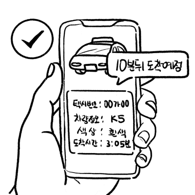

Senior Mobility
PROJECT 02 · SENIOR MOBILITY UX
TA:GO, a ride-sharing taxi service for older adults
What would it take for older adults unfamiliar with apps to call a taxi on their own, without help from family?
PERIOD
2024.09 – 2024.12
ROLE
Team member (team of 4)
MY PART
App UI · interaction design · PBV design and modelling
WITH TEAM
Desk research · interview design and moderation · methodology · planning · usability analysis
COMPETITION
3rd Kia PBV Idea Competition · Finalist
Chapter 01
Background and problem
01 · Background
Taxis are the easiest way to get around,
so why are they hard for older adults
to call?
In 2025 Korea became a super-aged society, with people over 65 making up about 20% of the population. Accidents involving older drivers are rising, but telling them simply to stop driving is no answer.
The easiest alternative is a taxi, yet the calling apps are complicated and the fares feel steep.
20%
Share of people aged 65+ in 2025
Statistics Korea, 2021
70.7%
Digital literacy among older adults
(general public = 100)
Digital Divide Survey, 2023
92%
Said taxi fares are expensive
Metabay taxi survey, 2023
Conclusion
Something has to replace driving, yet today's taxi apps are hard for older adults to use on their own.
02 · Target
We focused on older adults who want
to manage things themselves
Senior mobility services abroad mostly work by phone call. They are easy to use, but they leave fewer chances to use an app, which can widen the digital divide. We therefore focused on 'active digital users' among older adults — those keen to solve things for themselves.
39.1%
Active digital users
36.2%
Low skill, low use
24.7%
Digitally excluded
Source: Digital use in later life and ways to reduce digital exclusion, Korea Institute for Health and Social Affairs, 2020
Chapter 02
Research
Process
How the project ran
We defined the problem through observation and interviews, then ran a first usability test on a low-fidelity prototype. The insights reshaped the screens, and a final prototype went through a second round of testing.
Desk Research
Desk and case research
Observation
WOM · Town Watching
Contextual Inquiry
4 in round 1 · 6 in round 2
Affinity · Persona
21 behavioural variables
HMW · Scenario
Main HMW · scenarios
First usability test
Low-fi · 3 people
Final Prototype
5 insights applied
Second round
UT 4 · usability 2
How the research ran
We analysed what we gathered from observation and interviews step by step, which led to four core features.
2
Observations
WOM · Town Watching
10
In-depth interviews
4 in round 1 · 6 in round 2
21
Behavioural variables
From 7 keywords
3
Affinity directions
Comments sorted by stage of the journey
3
Main HMW
Diverged and converged from the POV
4
Key Feature
Final prototype
03 · Observation
Contrary to expectations, older adults
were learning the apps through practice
We gathered what older adults and the people around them were saying in articles, blogs, YouTube comments and social media (word of mouth). We then watched and interviewed two older adults as they called a taxi and travelled to their destination (town watching). Contrary to what we expected, they were learning how to use the apps through practice and trial and error.
Voices gathered online (word of mouth)
“They say you have to call a taxi with an app now, and I feel lost. My children and juniors showed me, but on my own it never worked.”
Woman in her 70s
“We run quarterly classes on calling a taxi by smartphone, and most of them tell us it is difficult.”
Staff member, Suwon welfare centre
“While young people called a Kakao Taxi and rode off, I had to stand in the street shouting for a taxi for half an hour.”
Man in his late 50s
“I installed the app and showed her, but she forgets and finds it complicated… I ended up calling every time.”
Threads user
“Some older people ring at two in the morning to ask how the app works or to have a taxi called for them.”
Suwon city official
“I wanted to pay myself, but Kakao T kept asking me to register a card, so I gave up.”
YouTube user
Sources: news articles, blogs, YouTube comments, Instagram, Threads
What we expected before observing, and what we found (town watching)
What we expected
Older adults understand digital devices poorly, so calling a taxi with an app would be a struggle.
After town watching
Their grasp of digital devices was better than expected, and after a few tries they were using the apps confidently.
“It was hard at first. After two or three goes it worked. Where it didn't, I repeated it until it did.”
The digital divide among older adults came down to how much they use technology, not to age.
04 · Contextual Inquiry
Were we only asking about
what we wanted to see?
The first interviews (4 people) tested hypotheses about technical, financial and physical circumstances and service experience. Afterwards we saw that the questions leaned towards confirming those hypotheses, so the second round (6 people) was rewritten without hypotheses, asking about their travel experience as a whole.
How the interviews changed: from confirming hypotheses to exploring experience
Round 1 · 4 people
Focused on confirming hypotheses
Technical circumstances
Financial circumstances
Physical circumstances
Service experience
Why we changed the design
“Are we setting hypotheses that point where we already want to go?”
Instead of fixed hypotheses, we concentrated on understanding how older adults actually travel.
Round 2 · 6 people (two each in their 60s, 70s and 80s)
Focused on exploring experience
How they travel and what decides it
Feelings while travelling and the influence of others
Difficulties and how they solve them
Social interaction while travelling
Transport costs
Voice
“I want to learn the app and take taxis on my own,
but it is so hard that I can't bring myself to try.”
In-depth interview participant
What the second round told us
01
They prefer to work things out rather than ask family, because learning something new brings a sense of achievement.
02
They will put up with sharing a ride because it brings the fare down.
03
As physical discomfort grows so does anxiety, which makes a restful, comfortable journey matter more.
04
Even with a stranger, knowing they are from the same neighbourhood lowers their guard and feels familiar.
Chapter 03
Defining the problem
05 · Affinity Diagram
Sorting the comments gave us
three directions for the service
We moved interview comments onto cards and sorted them by situation — calling a taxi, boarding, and travelling — then drew out the meaning stage by stage. The three directions that came out of it set the service's core features.
Travelling independently needed three things at once: confidence with the app, physical comfort, and relief from the cost
“So I managed it. I can pick up something new and use it.”
Interview comment U10-13
“I didn't know how to use the taxi app, but after two or three tries I could.”
Interview comment U8-03
“I kept failing, so in the end I gave up on the taxi and drove myself.”
Interview comment U7-17
“When there is that much boarding information, reading and understanding it all takes a while.”
Interview comment U9-32
“My biggest worry is whether I can get there and back safely.”
Interview comment U1-52
“Cost matters most.”
Interview comment U3-4
Direction 01
A practice-based solution that builds understanding and confidence with the mobile app
Direction 02
A vehicle recommendation that makes the journey physically easier
Direction 03
A shared-ride service for short journeys, built on clear information and lower fares
06 · Persona
She wanted to travel on her own,
not lean on her family
We classified the behaviour of twelve people — two from town watching and ten from the in-depth interviews — into 7 keywords and 21 behavioural variables, which gave three behavioural patterns. Our primary user, Bokja Park, wants to travel using the app on her own, without family help, so we mapped her journey stage by stage with its pain points and needs.
Primary persona
Primary Persona
Bokja Park
67 · retired, formerly self-employed
“I want to get around efficiently, and to feel confident doing it on my own.”
Life Goal
She enjoys using her smartphone and is getting better at it, and wants that to make buses and taxis easier so daily life improves.
Experience Goal
She wants to use digital tools to travel independently at every stage, mix with all sorts of people, and enjoy later life.
End Goal
Using the app freely after practice, without family help
Travelling comfortably with pleasant conversation with people her age
Paying with cash or a physical card rather than online
Getting there quickly and safely at little cost
A journey that does not strain her knees
Bokja Park's user experience map
Before leaving
On the way
Arrival
Stage
01
Getting ready
02
Before boarding public transport
03
On public transport
04
Just after getting off
05
Calling a taxi
HMW 1
06
Boarding the taxi
HMW 2
07
In the taxi
HMW 2
HMW 3
08
Getting out
Activities
Picking up medicine and phone
Taking the concession travel card
Walking to the nearest station
Taking the stairs to the platform
Checking arrivals on the display
Standing because it is full
Turning down an offered seat
Knee and ankle pain
Giving up on the lift because it is far
Climbing the stairs at the exit
Failing to hail a taxi in the street
Trying to call one with the app
Entering pick-up and destination
Calling the driver about the pick-up point
Checking the car details again before boarding
Following the route in real time
Talking with the driver
Paying with a physical card
Checking the payment details
Needs
Transport without stairs or steps
Seeing arrivals from a distance
A comfortable journey
Quiet conversation with neighbours
Fewer stairs
A shorter walk
An easy way to call a taxi
Using the app without family help after practice
Car details shown as images and in large type
Confirming the taxi follows the set route
Relief from the base fare
Paying herself
A handle to help her get out
Feeling
Pain Point
Remembering the travel card every time is a chore
Hard to take in the display and announcements
Stairs are physically demanding
Feeling bad about an offered seat
Tiring when it is crowded
Long walks inside the station
Too many stairs
Hard to hail a taxi in the street
Thrown by not knowing how to change the payment method
Hard to tell which car is hers without knowing the model
Worry about going off route
Worry about the fare in heavy traffic
Hard to get up and out of the car
HMW 1
Calling a taxi
How might we build confidence with the app by combining practice with real-time feedback?
Opportunity
Give plenty of practice before the real thing, so confidence comes first
HMW 2
Boarding · in the taxi
How might we add safeguards and reassurance to the journey for older passengers?
Opportunity
Tailored car and co-passenger details, plus live location sharing with family, to ease anxiety and build trust
HMW 3
In the taxi
How might we ease the cost of taxis for older adults?
Opportunity
Offer shared rides as a way to keep the fare reasonable
07 · How Might We
If mistakes are the fear,
what if you could practise first?
We reframed the POV statement from five angles to widen the questions, then narrowed them down through brainstorming to a main HMW. To change the sense that the app is difficult, people needed to succeed in a practice setting before calling a taxi for real.
How the question narrowed, step by step
Question
How might we turn the sense that taxi apps are difficult into something positive?
Step 1
What would help older adults use a taxi app easily?
Step 2
To change that sense of difficulty, what if using the app brought a feeling of achievement?
Step 3
What if practising in a safe setting rather than the real one built confidence?
Main HMW 1
How might we build confidence with the mobile app
by combining practice with real-time feedback?
Core features drawn from the main HMW
01
Practice mode
Practice that builds understanding and confidence before calling a taxi for real
02
Tailored car and co-passenger details
Car and co-passenger information matched to the user, easing physical and mental strain
03
Location sharing with family
Live location sharing with family for reassurance during the journey
04
Shared-ride matching
Automatic matching with riders going the same way, bringing the fare down
08 · Scenario
We drew the three core features
into Bokja Park's journey
We set out how the core features would work in real journeys through Bokja Park's scenarios, sketching every scene by hand. Three scenes — before calling a taxi, the journey itself, and calling a shared ride — define what the experience should give her.
User scenario storyboard
Scenario 01 · before calling a taxi
“Practice should let her follow the whole booking flow, so she feels confident before using the app for real”

01
She chooses practice mode in the taxi service.

02
Before practice starts, a short video guide shows how to enter a destination.

03
After the video, she practises calling a taxi herself.

04
Each successful practice run builds a sense of achievement.
Scenario 02 · the journey
“She should take in the recommended car and co-passenger details easily, and share her location with family to ease discomfort and worry”

01
Once she enters pick-up and destination, a car is recommended from her past rides and preferences.

02
She checks the car details, the driver's manner score and a short introduction.

03
Family sharing sends her route live to her daughter.

04
Her daughter at home follows her location and arrival time, and both feel at ease.

05
On arrival, a journey-complete alert and trip details go to her and her family.
Scenario 03 · calling a shared ride
“She should be matched automatically with someone going the same way, so sharing brings the cost down”

01
With frequent hospital visits making fares a burden, she tries the shared ride.

02
Riders going a similar way with high manner scores are matched first.

03
She sees the assigned car and arrival time at a glance, and relaxes.

04
After the ride she checks the final fare, what she saved and the points earned.

05
She finishes by rating her co-passenger's manners.
Chapter 04
First round of testing and improvements
09 · 1st Usability Test
A low-fi prototype tested
legibility and how intuitive it felt
We built a low-fidelity prototype covering riding alone or sharing, co-passenger and driver personality profiles, payment methods and payment history, and tested it with three older adults. Maze recorded success per task, misclick rate, time taken and where people tapped.
Screens and results by task
In the Maze heatmap, redder areas had more taps.
51
/ 100
Maze usability score
Maze calculates this from task success, misclick rate and time taken.
Results by task
Task 1
Call a taxi to ride alone, without conversation

2 of 3 succeeded
Misclick rate 67–88%
Task 2
Call a shared ride with someone who shares an interest

2 of 3 succeeded
Misclick rate 50–83%
Task 3
Choose 'pay myself' as the payment method

3 of 3 succeeded
Misclick rate 75%
(1 participant)
Task 4
Check the fare in the payment history

2 of 3 succeeded
Misclick rate 25–91%
The two hardest screens · Maze tap heatmaps

Choosing a driver personality
People hesitated between the options
Taps scattered across the four personality options. With text only, choosing the one they wanted took a long time.

Home screen
People could not find the bottom menu
Taps scattered between the central ride button and the corners of the screen. The icons and labels in the bottom bar were small, so finding 'payment history' took a while.
10 · Iteration
Five insights from the first round
reshaped the screens
We analysed the results participant by participant and drew out five insights. Changes to how information is shown and how choices are made went into the booking screens, while the interactions that guide the next step went into practice mode.
Insights from the first round and what changed
Insight 01
Pair images with plain wording
Text-only options now come with an image and a simpler label.
“I can't tell which one was the start and which the destination. Show it more simply and I'd understand.”
— U2
Insight 02
Text should be at least 20pt
We raised the minimum text size to 20.
Text followed the guidelines for older users, yet they still found it small to read.
— observation of U2
Insight 03
Profiles need more detail and a sign of verification
The co-passenger profile, which showed only age and gender, gained a 'liked by others' rating.
“Seeing just age and gender didn't really make me feel any easier about the person.”
— U1
Insight 04
Show only what is needed
We removed the step of choosing a co-passenger's personality and showed their manner score as a progress bar instead.
The more text on screen, the longer they deliberated, and having to choose themselves felt like a burden.
— observation of U1
Insight 05
Interactions should lead naturally to the next step
Participants were thrown by the co-passenger profile screen they had not seen before, which slowed the next task. Practice mode gained a blinking cue on the button to press next, and a highlighted screen edge showing that practice is under way.
“I couldn't keep up with the features… an explanation would help.”
— U3

First low-fi wireframes

Final prototype · practice mode
Chapter 05
Mobile app
11 · Practice Mode
Practising first makes it easier
Practice mode is a tutorial that walks through the real booking screens and buttons step by step. Even an older adult calling a taxi for the first time can follow the same flow first, without worrying about mistakes.
Three design points in practice mode

Point 01
A tutorial video before practice starts
A short video shows what they are about to practise.

Point 02
An interaction that invites the next tap
The next button to press blinks in red.

Point 03
A highlighted screen edge
A border round the screen shows that practice is under way.
Practice mode
How practice works
01
She chooses 'practise calling a taxi' on the home screen.
02
Before practice starts, a tutorial video shows the whole flow.
03
She follows the blinking buttons and practises calling a taxi herself.
04
After practice, she calls a taxi for real using the same flow.
12 · Key Features
Features that ease the physical,
emotional and financial strain
We designed features around what people found hard: choosing a co-passenger, travelling alone, and paying the fare. All three come from the anxiety and cost concerns heard in the interviews.

Sharing a ride
Co-passenger profiles that suit their preferences, a 'liked by others' rating, and a car recommended for their physical needs.

Location sharing with family
Once the ride begins, the route is shared live with a registered family member.

Shared rides and travel support
Riding alone applies travel support automatically, and sharing splits the fare.
Chapter 06
Mobility
13 · PBV
We designed the cabin so the journey
becomes time spent with others
We designed the inside of the PBV so that the co-passenger, car conditions and destination chosen in the app carry through into the physical journey. I led the PBV design and modelling, and worked out the seat layouts with the team.

A boarding slope folds out, so a wheelchair or walking aid can roll straight in and out.
Seat layouts

Social seating

Standard 5 seats

Wheelchair space
Three layouts: standard five seats,
social seating and wheelchair space.

Social seating layout
Seats face each other, so conversation comes naturally during the journey.

Co-passenger profile display
An armrest display shows co-passenger details and the route.

Per-seat arrival announcements
Sound directed at each seat announces that passenger's stop, avoiding confusion.

Slope and wheelchair anchor rails
People using a walking aid or wheelchair can board and alight safely.
Chapter 07
Second round of testing
14 · 2nd Test
Practice mode and family sharing
drew the best responses
We ran user testing with four older adults on the final prototype, and usability testing with two of them. Practice mode went down well with all four, while the amount of information and the order of payment were still called difficult.
Participants and how they responded to each feature
83 · female
Low IT confidence · UT · Usability
78 · female
Low IT confidence · UT · Usability
67 · female
High IT confidence · UT
78 · male
High IT confidence · UT
01
Practice mode
Perceived difficulty: 'hard' for 2 at first
later 'about right' for 1 and 'easy' for 1
Good
“Practice mode feels like the most useful part. The app is new to me, but with practice I think I could use it well.”
Bad
“I didn't realise the red in practice mode meant press here. It needs a friendlier explanation right at the start.”
02
Tailored car details
Called easy to understand in both user and usability testing
Good
“It's useful. At my age the body aches, and you never know when you might hurt yourself.”
Bad
No notable criticism
03
Co-passenger details in advance
Helped ease anxiety · views differed on how much to show
Good
“Having the information does put me at ease. Even a brief sense of who the person is would be good.”
Bad
“I'd want to know more about whether that person can be trusted.”
04
Location sharing with family
All four positive about easing anxiety during the journey
Good
“Very useful. It's reassuring, and my sons can see where I am and whether I've arrived, so we all feel easier.”
Bad
No notable criticism
05
Shared rides and travel support
Positive about the saving · the pre-boarding payment order felt unfamiliar
Good
“The underground is free and the bus costs money, but a taxi is out of reach, so having this saving built in was good.”
Bad
“Why does paying come first? I haven't even got in yet.”
Chapter 08
Design principles and next steps
15 · Design Principles
Independence for older adults starts
with familiarity and trust
We turned the problems that came up in both rounds into four design principles. Guidelines such as text size were not enough on their own: people also needed familiar ways of doing things and information they could trust.
Evidence from testing and the principles that followed
01
Keep the ways people already use things
They read the home icon as 'house', so they could not find the menu leading to payment history.
U1 · first round
02
Lead with images rather than text
Faced with text-only options, they stayed on one screen for a long time reading and working it out.
U1 · U2 · first round
03
Give enough to judge the other person by
“I'd want to know more about whether that person can be trusted.”
Second-round participant
04
Make the saving visible
“A taxi is out of reach, so having this saving built in was good.”
Second-round participant
16 · Next Steps
The problems that remain,
set out as the next design tasks
We turned the criticisms that kept coming up in the second round into the next design tasks. The difficulty clustered around two moments: starting practice, and checking the fare.
Problems found in testing and where to go next
Task
Problem found in testing
Next step
01
Guidance at the start of practice
“I didn't realise the red in practice mode meant press here. It needs a friendlier explanation right at the start.”
Second round · practice mode
Add a first-time explanation of what the blinking means before practice begins
02
Fare details for shared rides
“Government support 8,000 won, shared split 1,000 won — I don't know what that means. There was too much information to take in.”
Second round · shared rides
Show the final amount to pay first, with the discounts opening up only when needed
03
Order of payment
“Why does paying come first? I haven't even got in yet.”
Second round · shared rides
Show only an estimated fare before boarding, and move payment to after arrival
04
Trust details about the co-passenger
“I'd want to know more about whether that person can be trusted.” At the same time, others felt there was too much information.
Second round · co-passenger details in advance
Show the key trust details first, with verification and reviews opened on request
05
Scale of testing
Three people in the first round and two in the second usability round, so the results cannot be generalised.
Testing design
Task-based retesting with more older adults
in the real app environment
Next Project
03
The TV the whole family once gathered around — why is there no reason to turn it on now?
Mechanisms of technological avoidance and return in IPTV use in the personalization era